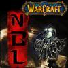

Это реконструированный сайт topw3.narod.ru | Харьков 2005-2007


Результаты турниров за весну 2007
1. ToP Training league: part II
Дата проведения: 11.03.2007
Место проведения: к.к. "Sigma"
Участвовавшие игроки ТоР-а: Exe, Diablo, Cherya, Rex
Количество участников: 10
Результаты турнира:
1-е место: ToP)Exe
2-е место: Adoveov
3-е место: Tema
4-е место: ToP)Rex
2. Best team of Warcraft III
Дата проведения: 17.03.2007
Место проведения: к.к. "c-club:Metrograd" (г. Киев)
Участвовавшие игроки ТоР-а: Exe, Diablo, Cherya, Adoveov
Количество участников: 6 команд
Результаты турнира:
1-е место: KerchNet
2-е место: c-club
3-е место: Crimea ProTeam
4-е место: nGt
3. ToP Training league: part III
Дата проведения: 25.03.2007
Место проведения: к.к. Sigma
Участвовавшие игроки ТоР-а: Diablo, Cherya
Количество участников: 4
Результаты турнира:
1-е место: Tema
2-е место: ToP)Diablo
3-е место: ToP)Cherya
4-е место: EL_Diablos
4. ToP--vs--DMG
Дата проведения: 30.03/1.04.2007
Место проведения: евро ладдер battle.net канал clan DMG
Участвовавшие игроки ТоР-а: Diablo, Cherya, Exe, Adoveov, Gannibal
Результаты:
 ToP)Diablo—[2:0]—
ToP)Diablo—[2:0]— DMG)Veter
DMG)Veter ToP)Exe—[0:2]—DMG)S1nnerman
ToP)Exe—[0:2]—DMG)S1nnerman ToP)Adoveov—[2:0]—DMG)PaulodToP)Cherya—[0:2]—DMG)ForlionaGannibal+Exe)—[1:2]—DMG (Forliona+Erraendil)
ToP)Adoveov—[2:0]—DMG)PaulodToP)Cherya—[0:2]—DMG)ForlionaGannibal+Exe)—[1:2]—DMG (Forliona+Erraendil)5. ToP Training league: part IV
Дата проведения: 1.04.2007
Место проведения: к.к. Sigma
Участвовавшие игроки ТоР-а: Diablo, Cherya, Exe, Rex
Количество участников: 7
Результаты турнира:
1-е место: TOP)Diablo
2-е место: ToP)Exe
3-е место: ToP)Cherya
4-е место: Tema
6. OLDI ProPlay Cup #4
Дата проведения: 08.04.2007
Место проведения: евро ладдер battle.net канал acup-1...n
Участвовавшие игроки ТоР-а: Exe
Количество участников: 336 человек
Результаты турнира:
1-е место: mouz.GeiL.Titan
2-е место: WE.Rob
3-4-е места: Neytpoh & ngt.Sonik
7. ToP--vs--RCG
Дата проведения: 08.04.2007
Место проведения: евро ладдер battle.net канал clan RCG
Участвовавшие игроки ТоР-а: Exe, Adoveov
Результаты:
ToP)Exe—[2:0]—RCG)EducationToP)Exe—[2:0]—RCG)Crazy-noob8. ToP--vs--YMT
Дата проведения: 10.04.2007
Место проведения: евро ладдер battle.net канал clan YMT
Участвовавшие игроки ТоР-а: Diablo, Adoveov
Результаты:
ToP)Diablo—[2:0]—YMT)LersToP)Adoveov—[2:0]—YMT)Dark_Shaman9. OLDI ProPlay Cup #5
Дата проведения: 14.04.2007
Место проведения: евро ладдер battle.net канал acup-1...n
Участвовавшие игроки ТоР-а: Adoveov
Количество участников: 357 человек
Результаты турнира:
1-е место: mouz.GeiL.Titan
2-е место: mouzgeil.knoff
3-4-е места: SK.HoT & t220-Knight
10. ToP Training league: part V
Дата проведения: 15.04.2007
Место проведения: к.к. Sigma
Участвовавшие игроки ТоР-а: Diablo, Cherya, Gannibal
Количество участников: 6
Результаты турнира:
1-е место: Tema
2-е место: ToP)Cherya
3-е место: ToP)Diablo
4-е место: ToP)Gannibal
11. ToP--vs--SUFF
Дата проведения: 15.04.2007
Место проведения: евро ладдер battle.net канал clan SUFF
Участвовавшие игроки ТоР-а: Diablo, Cherya, Exe, ot100y
Результаты:
ToP)Diablo—[2:0]—SUFF)SOKOLToP)Exe—[2:0]—/Suff)ForkedToP)Adoveov—[2:0]—SUFF)theRhinenot100y+Exe)—[2:0]—SUFF (Forked+TheRhinen)12. ToP--vs--J4S
 --vs--
--vs--
Дата проведения: 19-20.04.2007
Место проведения: евро ладдер battle.net канал clan J4S
Участвовавшие игроки ТоР-а: Diablo, Adoveov, Exe, Diablos
Результаты:
ToP)Diablo—[2:0]—J4S)Rio3rToP)Exe—[2:0]—J4S)SalaNToP)El_Diablos—[1:2]—J4S)SpiritWolfToP)Adoveov—[2:0]—J4S)GloomAdoveov+Diablo)—[2:0]—J4S (Salan+Rio3r)13. Alkar season league #2
Дата проведения: 21.04.2007
Место проведения: Сервер bnet- Alkar
Участвовавшие игроки ТоР-а: Exe, Cherya
Количество участников:64 человека
Результаты турнира:
1-е место: TOP)Exe
2-е место: kantryuk
3-4-е места: bocxod & ArmingVanBuren
14. rim CUP #1
Дата проведения: 25.04.2007
Место проведения: официальный европейский сервер battle.net канал rim
Участвовавшие игроки ТоР-а: Gannibal, Diablo
Количество участников:63 человека
Результаты турнира:
1-е место: NWRS.KemPeR
2-е место: r.a.sh
3-4-е места: G.QPAD.nNt & MORG]ag3nt
15. ToP Training league: part VI
Дата проведения: 29.04.2007
Место проведения: к.к. Sigma
Участвовавшие игроки ТоР-а: Diablo, Exe, Rex
Количество участников: 5
Результаты турнира:
1-е место: ToP)Exe
2-е место: DNI.Imba-elf
3-е место: ToP)Diablo
4-е место: Tema
16. ToP--vs--SLeu
--vs--
Дата проведения: 29.04.2007
Место проведения: евро ладдер battle.net канал clan ToP
Участвовавшие игроки ТоР-а: Diablo, Adoveov, Exe, Tema
Результаты:
ToP)Exe—[2:1]—Sleu)RandomToP)Tema—[1:2]—SLeu)PumaToP)Adoveov—[0:2]—Sleu)PetrikToP)Diablo—[2:0]—SLeu)GnomlovesManyaExe+Diablo)—[2:0]—SLeu (GnomlovesManya+Puma)17. ToP Training league: part VII
Дата проведения: 6.05.2007
Место проведения: к.к. Sigma
Участвовавшие игроки ТоР-а: Diablo, Cherya
Количество участников: 5
Результаты турнира:
1-е место: FIst
2-е место: ToP)Diablo
3-е место: Tema
4-е место: ToP)Cherya
18. Alkar season league: spring Final
Дата проведения: 13.05.2007
Место проведения: Сервер bnet- Alkar
Участвовавшие игроки ТоР-а: Exe
Количество участников:8 человек
Результаты турнира:
1-е место: NeuroFunk
2-е место: Sekrets
3-е место: ToP)Exe
4-е место: Tk-My)l(uk
19. ToP--vs--RT
--vs--
Дата проведения: 13.05.2007
Место проведения: евро ладдер battle.net канал clan RT
Участвовавшие игроки ТоР-а: Diablo, Fist, Exe, Tema
Результаты:
ToP)Tema—[0:2]—RT-AlanToP)Fist—[1:2]—RT-ChaosSkillToP)Diablo—[1:2]—RT-MilikinExe+FIst)—[2:0]—RT (Raze+Casper)20. tour for noob #1
Дата проведения: 18.05.2007
Место проведения: официальный европейский сервер battle.net канал rim
Участвовавшие игроки ТоР-а: Gannibal
Количество участников:32 человека
Результаты турнира:
1-е место: Silent_Fog
2-е место: ngt.noobkiller
3-е место: sm2
4-е место: SL.eu.GnomLovesManya
21. ToP--vs--NBL
--vs--
Дата проведения: 24.05.2007
Место проведения: евро ладдер battle.net канал clan NBL
Участвовавшие игроки ТоР-а: Diablo, Fist, Exe, Adoveov
Результаты:
ToP)Adoveov—[2:0]—NBL)DoJ_Nv_ToP)Fist—[1:2]—NBL)FocuS-ToP)Diablo—[2:0]—NBL)SwordToP)Exe—[2:0]—NBL)MymitanG97